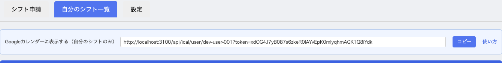
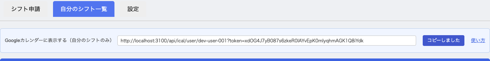

一般ユーザー向け操作ガイド
このシフト管理システムは、アルバイトスタッフの皆様がシフト申請を簡単に行えるウェブアプリケーションです。
提供されたURLをウェブブラウザで開きます。
画面右上の「Google でログイン」ボタンをクリックします。
使用するGoogleアカウントを選択し、必要に応じてパスワードを入力します。
ログインが成功すると、シフト管理画面が表示されます。
初回ログイン時は、必ずプロフィール設定を行ってください。
画面上部の「設定」タブをクリックします。
勤務簿に記載する本名（フルネーム）を入力します。
シフト表示で使用するニックネームを入力します。
「設定を保存」ボタンをクリックして完了です。
本名とニックネームの両方を設定することで、シフト表には見やすいニックネームが表示され、正式な書類には本名が使用されます。
「シフト申請」タブをクリックします。
カレンダーから希望する日付をクリックします。
希望する時間枠にチェックを入れます（複数選択可）。
「申請する」ボタンをクリックして完了です。
「自分のシフト一覧」タブで、申請済みのシフトを確認できます。
画面上部の「更新（リロード）」ボタンをクリックすると、最新のシフト情報を取得できます。他の端末やブラウザで変更した内容を反映させたい場合に使用してください。
一覧から削除したいシフトを見つけます。
該当行の「削除」ボタンをクリックします。
確認メッセージが表示されたら「OK」をクリックします。
当日、および過去のシフトは薄い背景色で表示され、削除できません。未来のシフトのみ削除可能です。
自分のシフトを、普段使っている Googleカレンダー に表示できます。一度設定しておけば、シフトを申請したり削除したりするたびに、カレンダー側にも自動で反映されます。毎回手入力する必要はありません。
表示されるのは自分のシフトだけです。他の人のシフトは表示されません。スマートフォンのGoogleカレンダーアプリにも、同じアカウントなら自動で表示されます。
ログインしたあと、画面上部の「自分のシフト一覧」タブをクリックします。一覧の上に「Googleカレンダーに表示する（自分のシフトのみ）」と書かれた青い枠があります。

青い枠の右にある「コピー」ボタンをクリックします。ボタンの文字が「コピーしました」に変われば、URLがコピーできています。

パソコンのブラウザで calendar.google.com を開きます。この設定はパソコンから行ってください。スマートフォンのアプリからは追加できませんが、パソコンで設定すればスマートフォンにも自動的に表示されます。
画面左側の下のほうにある「他のカレンダー」の横の「＋」をクリックし、メニューから「URLで追加」を選びます。
「カレンダーのURL」の入力欄に、手順2でコピーしたURLを貼り付けます（Windowsなら Ctrl+V、Macなら ⌘+V）。そのあと「カレンダーを追加」をクリックします。
左側のカレンダー一覧に「シフト管理」が追加され、自分のシフトが予定として表示されます。
シフトを申請・削除しても、Googleカレンダーに反映されるまで最大で24時間ほどかかることがあります。これはGoogleカレンダーが情報を取りに来るタイミングによるもので、設定の失敗ではありません。
急いで最新の状態を確認したいときは、このシフト管理システムの「自分のシフト一覧」タブを見てください。こちらは常に最新です。
このURLには、あなた専用の合言葉（トークン）が含まれています。URLを知っている人は誰でもあなたのシフトを見られてしまうため、SNSに貼ったり、友達に送ったりしないでください。
もし他の人に知られてしまった場合は、管理者に連絡してください。
カレンダー形式でシフトの空き状況を確認できます。